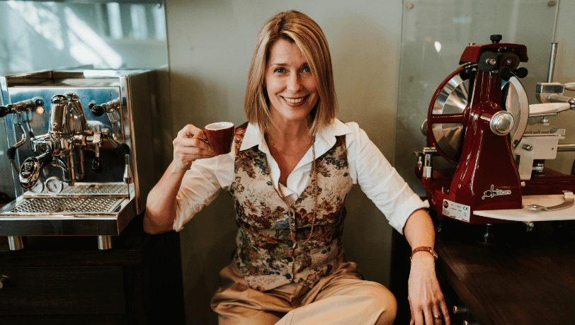
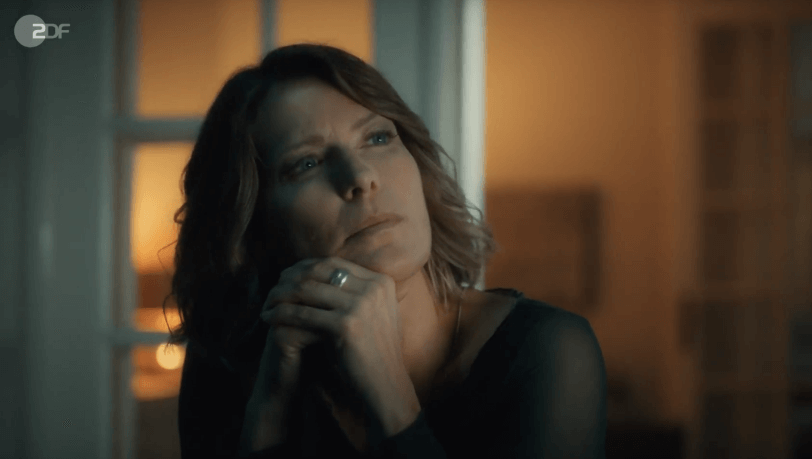

Valerie Niehaus kommentiert mit heute-show history „60 Jahre ZDF” aus der Perspektive der Frauen und zeigt,
warum sie es waren, die den Sender so erfolgreicht gemacht haben.
Die ZDF Reihe erzählt von einem Freundeskreis in Eisenach. Als
Juri, der kurz vor dem Mauerfall über die Prager Botschaft in den Westen
abgehauen ist, nach dreißig Jahren zurück nach Hause kommt, gerät die Welt der
Figuren ins Wanken-Wahrheiten und Lügen kommen ans Licht und die Freunde kämpfen
darum, sich treu zu bleiben und sich dennoch verändern zu dürfen.
Vita
Valerie Niehaus wurde 1974 in Emsdetten in Nordrhein-Westfalen geboren.
In der
Barockstadt Fulda verbrachte sie ihre Kindheit und ihre Jugendjahre erlebte sie in
München, wo sie mit 13 Jahren ihren ersten Auftritt als Schauspielerin in der
Familiensaga „Rote Erde“ hatte.
Valerie übernahm direkt nach dem Abitur 1994 die Hauptrolle in der Soap
Opera „ Verbotene
Liebe“, die in Köln produziert wurde. 1997 zog sie nach New York um dort am renommierten
Lee Strassberg Theatre Institute zwei Jahre Schauspiel zu studieren. Schon während der
Studienzeit drehte sie aber in Deutschland bereits ihren ersten Kinofilm unter der Regie
von Sönke Wortmann „St. Pauli Nacht“. Seit 1999 lebt Valerie in Berlin, seit einigen
Jahren auch in Zürich. Sie ist Mutter eines Sohnes und verheiratet.
Zahlreiche Haupt- und Nebenrollen in Spielfilmen, Serien und Shows aller
Sender und
Genres, machen sie für ihre Wandelbarkeit bekannt. Ausserdem spricht sie seit Beginn
ihrer Laufbahn Hörbücher, Werbespots, Industrie- und Dokumentarfilme. Seit 2022 arbeitet
sie als Botschafterin für die Kindernothilfe.
Auszeichnungen
2018
Deutscher Comedypreis
Sketch History
2017
Deutscher Comedypreis
Sketch History
2016
Deutscher Comedypreis
Sketch History
2012
Deutscher Fernsehpreis als Bester Mehrteiler
Der Mann mit dem Fagott
Romy als Bester Fernsehfilm
Der Mann mit dem Fagott
2011
Publikums Bambi
Der Mann mit dem Fagott


Filmografie
2023
Nord Nord Mord
TV Series | Director - Berno Kürten
Wir sind die Meiers
TV Series | Director - Lutz Heineking jr., Jan Markus
Linhof
Das Leben geht weiter
TV Film | Director - Peter Stauch
Flüchten oder Standhalten
TV Film | Director - Peter Stauch
2022
Malibu – Ein Zelt für drei
TV Film | Director - Luise Brinkmann
Malibu – Camping für Anfänger
TV Film | Director - Luise Brinkmann
Friesland (Folge: Unter der
Oberfläche)
TV Series | Director - Marc Rensing
Die Geschichte der Menschheit –
leicht gekürzt
Cinema | Director - Erik Haffner
Katharinas Entscheidung
TV Film | Director - Esther Gronenborn
Familienbesuch
TV Film | Director - Esther Gronenborn
2021
Letzte Spur Berlin (Folge: Weisser
Wahn)
TV Film | Director - diverse
Song für die Freiheit
TV Film | Director - Esther Gronenborn
Der richtige Vater
TV Film | Director - Esther Gronenborn
2020
Beste Freundinnen
TV Film | Director - Francis Meletzky
Juris Rückkehr
TV Film | Director - Francis Meletzky
Kinder und andere Baustellen
TV Film | Director - Christina Schiewe
Pan Tau (Folge: Science Friction)
TV Series| Director -
Franziska Meyer Price
Kroymann (Folge 11)
Satiresendung | Director - Nicolas Berse
SOKO Köln (Folge: Rabenmutter)
TV Series| Director - diverse
18% Grey
Cinema | Director - Viktor Chouchkov
2019
Bettys Diagnose (Folge:
Liebesbeweise)
TV Series | Director - diverse
Daheim in den Bergen –
Schwesternliebe
TV Series | Director - Michael Zens
Der Bergdoktor (Folge: Ein neuer
Anfang)
TV Series | Director - Jorgo Papavassiliou
2018
Die Toten von Salzburg –
Zeugenmord
TV Series | Director - Erhard Riedelsperger
2018-2023
heute-show
Satiresendung | Director - diverse, Marcel Behnke,
Joscha Seehausen
2018
Böhmermanns perfekte
Weihnachten
TV Film | Director - Nicolas Berse
Kaugummiblase
Kurzfilm | Director - Anja Gurres
2017
Meine fremde Freundin
TV Film | Director - Stefan Krohmer
Jella jagt das Glück
TV Film | Director - Enno Reese
2016-2019
Die Spezialisten – Im Namen der
Opfer (40 Folgen)
TV Series | Director - diverse
2016
Verdammt verliebt auf Malle
TV Film | Director - Ulli Baumann
Trieb
Cinema | Actor - Eric Stehfest
2015
Der Staatsanwalt (Folge: Ritt
in den Tod)
TV Series | Director - diverse
Überleben an der Scheidungsfront
TV Film | Director - Titus Selge
Zwei Familien auf der Palme
TV Film | Director - Andi Niessner
Drunter & Brüder
TV Film | Director - Ulli Baumann
2014-2017
Sketch History
TV Series | Director - Erik Haffner, Sven Unterwaldt,
Tommy Baumann
2014
Schmidt – Chaos auf Rezept (Folge:
Hochzeitstag)
TV Series | Director - diverse
Der Rücktritt
TV Film | Director - Thomas Schadt
Frauenherzen
TV Film | Director - Sophie Allet-Coche
2013
Herzensbrecher – Vater von vier
Söhnen (Folge: Beichtgeheimnis)
TV Series | Director - diverse
Alarm für Cobra 11 – Die
Autobahnpolizei (Folge: Wilde Tiere)
TV Series | Director - diverse
Mordshunger – Verbrechen und andere
Delikatessen (2 Folgen)
TV Series | Director - diverse
Kripo Holstein – Mord und Meer
(Folge: Die letzte Fahrt)
TV Series | Director - diverse
Die Spionin
TV Film | Director - Miguel Alexandre
Der Feind in meinem Leben
TV Film | Director - Bernd Böhlich
2012
Die Draufgänger (Folge: Uneasy
Rider)
TV Series | Director - diverse
: Beutolomäus und der falsche
Verdacht
TV Film | Director - Hannes Spring
Mich gibt’s nur zweimal
TV Film | Director - Oliver Dommenget
Überleben an der Wickelfront
TV Film | Director - Titus Selge
2011
Rosa Roth (Folge: Notwehr)
TV Series | Director - Carlo Rola
Kommissar Stolberg (Folge:
Abgezockt)
TV Series | Director - diverse
Donna Leon – Das Mädchen seiner
Träume
TV Series | Director - Sigi Rothemund
Das große Comeback
TV Film | Director - Tomy Wigand
Der Mann mit dem Fagott
2part TV Film | Director - Miguel Alexandre
Ausgerechnet Sex!
TV Film | Director - Andie Niessner
Biss zur großen Pause – Das
Highschool Vampir Grusical
TV Film | Director - Dennis Satin
2010
SOKO Donau (Folge: Tod eines
Schnüfflers)
TV Series | Director - diverse
Garmischer Bergspitzen
TV Film | Director - Dietmar Klein
Die Liebe kommt mit dem Christkind
TV Film | Director - Peter Sämann
Sind denn alle Männer Schweine?
TV Film | Director - Sophie Allet-Coche
2009
Eine Liebe in St. Petersburg
TV Series | Director - Dennis Satin
Tierisch verliebt
TV Film | Director - Ariane Zeller
Entscheidung in den Wolken
TV Film | Director - Edzard Onneken
2009-2011
Doctor’s Diary (4 Folgen)
TV Series | Director - diverse
2009-2010
Der Landarzt (6 Folgen)
TV Series | Director - diverse
2009-2010
Kommissar Labrea
TV Series | Director - Dennis Satin
2010
Todesträume am Montparnasse
TV Series | Director - Dennis Satin
Mord in der Rue St. Lazare
TV Series | Director - Dennis Satin
2009
Tod an der Bastille
TV Series | Director - Dennis Satin
2008
Mogadischu
TV Film | Director - Roland Suso Richter
Die Gustloff
2part TV Film | Director - Sepp Vilsmaier
2007
Die Rettungsflieger (Folge: Kabale
und Liebe)
TV Series | Director - diverse
2006
Alles über Anna (10 Folgen)
TV Series | Director - Ullrich Zrenner,
Michael Schneider, Nicolai Rohde, Torsten Wacker
Kinder zu unterstützen bedeutet die Zukunft aktiv zu gestalten. Je mehr
Kinder kindgerecht,
in geschütztem Raum und mit Zugang zu Bildung aufwachsen können, desto mehr Kinder können
ihre Zukunft aktiv mitgestalten…Dies gilt nicht nur für Deutschland, und darum unterstütze
ich mit meiner Patenschaft bei der Kindernothilfe eine Organisation, die über Grenzen hinaus
rettet, hilft und nachhaltig unterstützt…
„Niemand verlässt freiwillig seine Heimat, das sollte uns allen bewusst
sein. Ich
setze mich gemeinsam mit der UNO-Flüchtlingshilfe für Flüchtlinge ein, damit die
Menschen, die so viel Stärke und Durchhaltevermögen bewiesen haben, eine Chance auf eine
sichere Zukunft haben: Wir alle brauchen einander!“ Besonders wichtig ist es, dass
Geflüchtete – und vor allem Kinder –
eine Chance auf Bildung erhalten. Denn das ist entscheidend, damit sie wieder auf eigenen
Füßen stehen und
sich selbst eine bessere Zukunft aufbauen können.
Alle Inhalte und Bilder sind urheberrechtlich geschützt. Für Pressefotos
wenden Sie sich bitte an Herrn Bernd Brundert, bb@berndbrundert.de
oder +30 78 70 69 48.